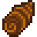

Taro Root
| Taro Root | |||||||||||||||||||||||
|  | |||||||||||||||||||||||
| This starchy root is one of the most ancient crops. | |||||||||||||||||||||||
| Information | |||||||||||||||||||||||
| Seed | |||||||||||||||||||||||
| Growth Time | 10 days (7 when irrigated) | ||||||||||||||||||||||
| Season | |||||||||||||||||||||||
| XP | 16 Farming XP | ||||||||||||||||||||||
| Energy / Health |
|
||||||||||||||||||||||
|
|||||||||||||||||||||||
|
|||||||||||||||||||||||
The Taro Root is a vegetable crop that grows from Taro Tuber after 10 days, or 7 days if the crop is planted near water. Taro Root plants do not need to be watered if they are planted near water.
Stages
| Type | Stage 1 | Stage 2 | Stage 3 | Stage 4 | Harvest |
|---|---|---|---|---|---|
| Non-Irrigated | 1 Day | 2 Days | 3 Days | 4 Days | Total: 10 Days |
| Irrigated | 1 Day | 1 Day | 2 Day | 3 Days | Total: 7 Days |
Crop Growth Calendar
|
| ||||||||||||||||||||||||||||||||||||||||||||||||||||||||||||||||||||||||||||||||||||
| Agriculturist and Speed-Gro Comparison - Unirrigated | |||||||||||||||||||||||||||||||||||||||||||||||||||||||||||||||||||||||||||||||||||||||||||||||||||||||||||||||||||||||||||||||||
|---|---|---|---|---|---|---|---|---|---|---|---|---|---|---|---|---|---|---|---|---|---|---|---|---|---|---|---|---|---|---|---|---|---|---|---|---|---|---|---|---|---|---|---|---|---|---|---|---|---|---|---|---|---|---|---|---|---|---|---|---|---|---|---|---|---|---|---|---|---|---|---|---|---|---|---|---|---|---|---|---|---|---|---|---|---|---|---|---|---|---|---|---|---|---|---|---|---|---|---|---|---|---|---|---|---|---|---|---|---|---|---|---|---|---|---|---|---|---|---|---|---|---|---|---|---|---|---|---|---|
Regular
|
|
|
| ||||||||||||||||||||||||||||||||||||||||||||||||||||||||||||||||||||||||||||||||||||||||||||||||||||||||||||||||||||||||||||||
| *Note that the 10% table also applies to the Agriculturist Profession without any fertilizer. | |||||||||||||||||||||||||||||||||||||||||||||||||||||||||||||||||||||||||||||||||||||||||||||||||||||||||||||||||||||||||||||||||
|
|
| |||||||||||||||||||||||||||||||||||||||||||||||||||||||||||||||||||||||||||||||||||||||||||||||||||||||||||||||||||||||||||||||
| Agriculturist and Speed-Gro Comparison - Irrigated | |||||||||||||||||||||||||||||||||||||||||||||||||||||||||||||||||||||||||||||||||||||||||||||||||||||||||||||||||||||||||||||||||
|---|---|---|---|---|---|---|---|---|---|---|---|---|---|---|---|---|---|---|---|---|---|---|---|---|---|---|---|---|---|---|---|---|---|---|---|---|---|---|---|---|---|---|---|---|---|---|---|---|---|---|---|---|---|---|---|---|---|---|---|---|---|---|---|---|---|---|---|---|---|---|---|---|---|---|---|---|---|---|---|---|---|---|---|---|---|---|---|---|---|---|---|---|---|---|---|---|---|---|---|---|---|---|---|---|---|---|---|---|---|---|---|---|---|---|---|---|---|---|---|---|---|---|---|---|---|---|---|---|---|
Regular
|
|
|
| ||||||||||||||||||||||||||||||||||||||||||||||||||||||||||||||||||||||||||||||||||||||||||||||||||||||||||||||||||||||||||||||
| *Note that the 10% table also applies to the Agriculturist Profession without any fertilizer. | |||||||||||||||||||||||||||||||||||||||||||||||||||||||||||||||||||||||||||||||||||||||||||||||||||||||||||||||||||||||||||||||||
|
|
| |||||||||||||||||||||||||||||||||||||||||||||||||||||||||||||||||||||||||||||||||||||||||||||||||||||||||||||||||||||||||||||||
Gifting
| Villager Reactions
| |
|---|---|
| Like | |
| Dislike | |
Recipes
| Image | Name | Description | Ingredients | Energy / Health | Buff(s) | Buff Duration | Recipe Source(s) | Sell Price |
|---|---|---|---|---|---|---|---|---|
| Poi | A traditional food with a delicate, sweet flavor when eaten fresh. | N/A | N/A |
|
Tailoring
A Taro Root can be used in the spool of the Sewing Machine to create the dyeable Shirt And Belt. It can be used in dyeing, serving as an orange dye at the dye pots, located in Emily's and Haley's house, 2 Willow Lane.
Quests
- Three Taro Roots may be requested by Blue Discus in a Fish Pond quest to increase the capacity of the pond from 3 to 5.
- Ten Taro Roots may be requested by Blue Discus in a Fish Pond quest to increase the capacity of the pond from 5 to 10.
- Caroline may request 100 Taro Roots in the "Island Ingredients" Special Order. The reward is gold equivalent to 50% of base crop price and the Solar Panel recipe.
Trivia
- After harvesting a Taro Root, the ground underneath it will remain watered for the rest of the day.
History
- 1.5: Introduced.
| Crops | |
|---|---|
| Spring | Blue Jazz • Carrot • Cauliflower • Coffee Bean • Garlic • Green Bean • Kale • Parsnip • Potato • Rhubarb • Strawberry • Tulip • Unmilled Rice |
| Summer | Blueberry • Coffee Bean • Corn • Hops • Hot Pepper • Melon • Poppy • Radish • Red Cabbage • Starfruit • Summer Spangle • Summer Squash • Sunflower • Tomato • Wheat |
| Fall | Amaranth • Artichoke • Beet • Bok Choy • Broccoli • Corn • Cranberries • Eggplant • Fairy Rose • Grape • Pumpkin • Sunflower • Wheat • Yam |
| Winter | Powdermelon |
| Special | Ancient Fruit • Cactus Fruit • Pineapple • Qi Fruit • Sweet Gem Berry • Taro Root • Tea Leaves |